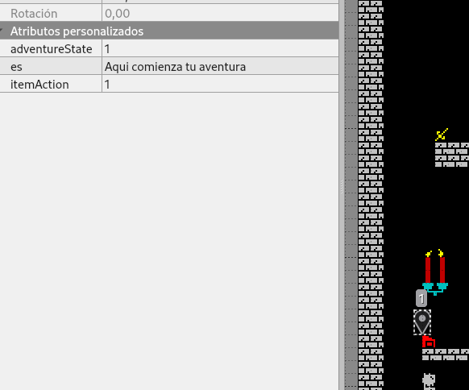
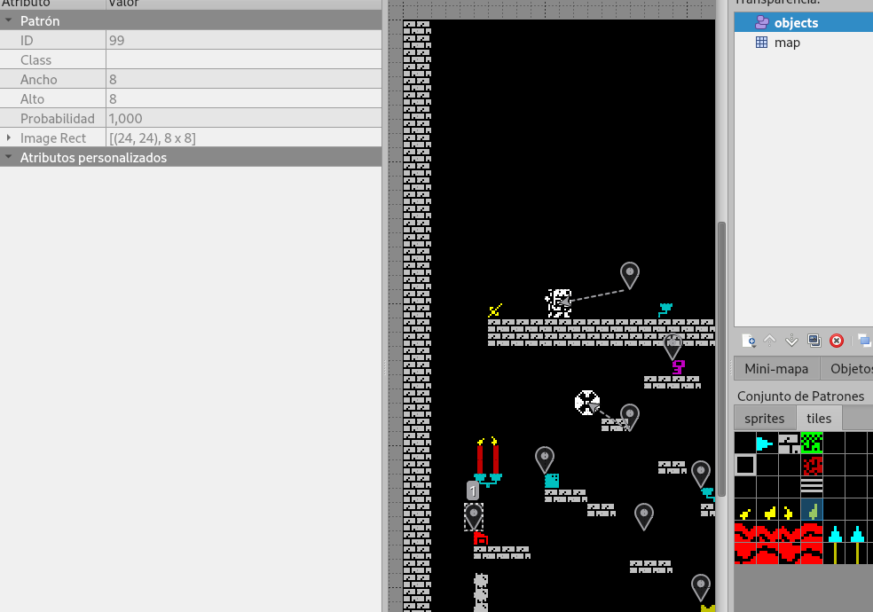

Configura tu aventura
Con la versión 3.0 del ZXGM Infinity puedes diseñar tu propia aventura gráfica mejor que antes!!!!
O si no, puedes meter textos que ayuden al jugador para conocer bien el entorno y las mecánicas
Configuración general en atributos del mapa (tiled)
Con estos parámetros se activa y configura la aventura en tu juego:
-
adventureTexts habilita la opción de tener textos habilitados para tu aventura
-
adventureTextsLength indica al compilador la longitud máxima que tendrán tus textos con el fin de optimizar mejor el espacio de tu juego.
Las longitudes son 30, 45 y 60. Hay que tener en cuenta que en el juego se mostrarán lineas de 15 caracteres por lo que mínimo serían 2 y máximo 4.
-
adventureTextsClearScreen con esto indicas al compilador que te muestre los textos sin limpiar la pantalla
-
adventureTextsAcceptWithFire habilita que los mensajes se acepten pulsando disparo
-
adventureTextsHideTiles esto indica al motor que oculte/muestre aquellos tiles asociados a pasos de la aventura mientras no puedas cogerlos. Activando esta opción, aquellos tiles configurados para el modo aventura se deben/pueden quitar del mapa y el motor se encargará de pintarlos, evitando el efecto popping.
-
adventureTextsBackgroundColor hace que al mostrar los mensajes al usuario se cambie el color de la pantalla al indicado aquí. Hay que tener en cuenta que habilitando este adventureTextsClearScreen no tiene efecto.
Siempre que esté así configurado, adjunto al texto se mostrará siempre el item/tile asociado.
A tener en cuenta:
- El total de textos que se pueden introducir son 250 (de momento, pero por dejar espacio y memoria disponible son los que hay ahora)
- Cada vez que se muestra un texto hay que pulsar intro o disparo para continuar.
- Para activar los textos hay 2 maneras:
- asociándolo a un item especial del juego (llave, item, bala o vidas). Sólo se mostrará una vez, al coger el objeto.
- posándose en algún sitio donde haya un texto y pulsar disparo (hay que tener en cuenta esto para no poner enemigos cerca)
Configurando el comportamiento de los textos y la aventura
No hay límite de textos por pantalla (salvo el limite global) y para añadirlos sólo tienes que meter un "point" e indicar el type/class como "text".
Para identificar donde hay un texto puede usarse un tile transpasable. Si coincide el punto de texto con la esquina superior izquierda del tile se mostrará junto al texto.
Los textos de la aventura pueden ser de 2 tipos: relativos a la aventura (completándola se completa el juego) o meramente informativos.
Atributos de los textos

Los puntos de texto tienen 3 atributos configurables:
-
es o en (lo configurado en el gameLanguage) aquí tendrás que introducir el texto a mostrar teniendo en cuenta tu configuración y que las lineas son de 15 caracteres (para que no se corten las palabras).
-
adventureState sirve para conocer en qué punto de la aventura se debe mostrar este punto de texto permitiendo mostrar distintos textos en el mismo tile dependiendo del avance de tu aventura. Recordar que empieza por 1 y deben ser correlativos. Cogido el último habrás ganado. Activando esto puedes desactivar el objetivo de items, o subirlo (objetivo de items) para no alcanzarlo nunca, ya que puede ser confuso para el jugador. Otra alternativa es que esté oculto el úĺtimo item bajo el paraguas de tu aventura y sólo se muestre al seguir ciertas pistas.
Si no indicas ningún estado de aventura tus textos se usarán como información (y se liberará algo de espacio para tí en el juego)
El modo aventura no es compatible con el modo arcade y de niveles, pero si los textos informativos.
- itemAction valor numérico que indica al motor qué dependencia tiene este punto. Hay 3 modos de configurar:
- 0 indica que es un texto informativo y que puede ser consultado tantas veces como se desee.
- Usado junto con adventureState hace que el mensaje sólo se muestre en ese estado de la aventura pero sin avanzar (como pistas adicionales al estado actual)
- id de item permite asociar un texto a un item
- Usado junto con adventureState permite al motor saber qué tile mostrar con el modo adventureTextsHideTiles además que será clave para avanzar al siguiente estado de la aventura
- Usado junto a un item especial mostrará un texto asociado automáticamente (muy útil para dar información contextual de para qué sirve o, si va asociado a un adventureState, para indicar que has conseguido el item correcto, obligando al player a cogerlos en un orden concreto)
- 0 indica que es un texto informativo y que puede ser consultado tantas veces como se desee.
El identificador del item lo puedes consultar pinchando en el selector de items. Te mostrará en el panel de propiedades de la izquierda el ID y ese número es el que debes poner
